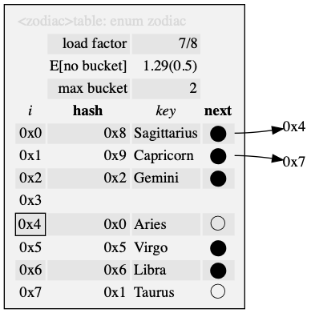

table_result
enum table_result { TABLE_RESULT };
This is the result of modifying the table, of which TABLE_ERROR is false. 

<N>table implements a set or map of <PN>entry as a hash table. It must be supplied a <PN>hash_fn and, <PN>is_equal_fn or <PN>inverse_hash_fn.
<N> that satisfies C naming conventions when mangled and a valid <PN>key associated therewith; required. <PN> is private, whose names are prefixed in a manner to avoid collisions.TABLE_HASH, and either TABLE_IS_EQUAL or TABLE_INVERSE, but not both, are required. Function satisfying <PN>hash_fn, and <PN>is_equal_fn or <PN>inverse_hash_fn.size_t.C naming conventions when mangled and a <PN>value used in <N>table<D>get. There can be multiple defaults, but only one can omit TABLE_DEFAULT_NAME.<SZ> that satisfies C naming conventions when mangled and function implementing <PSZ>to_string_fn. There can be multiple to string traits, but only one can omit TABLE_TO_STRING_NAME.typedef TABLE_UINT <PN>uint;
<PN>hash_fn returns this hash type by TABLE_UINT, which must be be an unsigned integer. Places a simplifying limit on the maximum number of elements of half the cardinality.
typedef TABLE_KEY <PN>key;
Valid tag type defined by TABLE_KEY used for keys. If TABLE_INVERSE is not defined, this will be part of the buckets.
typedef const TABLE_KEY <PN>ckey;
Read-only <PN>key. Makes the simplifying assumption that this is not const-qualified.
typedef <PN>uint(*<PN>hash_fn)(<PN>ckey);
A map from <PN>ckey onto <PN>uint that, ideally, should be easy to compute while minimizing duplicate addresses. Must be consistent for each value while in the table. If <PN>key is a pointer, one is permitted to have null in the domain.
typedef <PN>key(*<PN>inverse_hash_fn)(<PN>uint);
Defining TABLE_INVERSE says <PN>hash_fn forms a bijection between the range in <PN>key and the image in <PN>uint. The keys are not stored in the hash table at all, but rely on this, the inverse-mapping.
typedef int(*<PN>is_equal_fn)(<PN>ckey a, <PN>ckey b);
Equivalence relation between <PN>key that satisfies <PN>is_equal_fn(a, b) -> <PN>hash(a) == <PN>hash(b).
typedef TABLE_VALUE <PN>value;
Defining TABLE_VALUE produces an associative map, otherwise it is the same as <PN>key.
typedef struct <N>table_entry <PN>entry;
If TABLE_VALUE, this is <N>table_entry; otherwise, it's the same as <PN>key.
typedef int(*<PN>policy_fn)(<PN>key original, <PN>key replace);
Returns true if the replace replaces the original.
typedef void(*<PSZ>to_string_fn)(const <PSZ>type *, char(*)[12]);
to_string.h: responsible for turning the argument into a 12-char null-terminated output string. <PSZ>type is contracted to be an internal iteration type of the box.
enum table_result { TABLE_RESULT };
This is the result of modifying the table, of which TABLE_ERROR is false.
struct <N>table_entry { <PN>key key; <PN>value value; };
Defining TABLE_VALUE creates this map from <PN>key to <PN>value as an interface with table. In general, reducing the size of these elements will be better for performance.
struct <N>table { struct <PN>bucket *buckets; <PN>uint log_capacity, size, top; };
To initialize, see <N>table, TABLE_IDLE, {0} (C99,) or being static. The fields should be treated as read-only; any modification is liable to cause the table to go into an invalid state.

struct <N>table_iterator;

Adding, deleting, successfully looking up entries, or any modification of the table's topology causes the iterator to become invalid. Use <N>table_iterator_remove to avoid this. For tables that can have zero as a valid value, <N>table_has_next can differentiate between them. Iteration usually not in any particular order. The asymptotic runtime of iterating though the whole table is proportional to the capacity.
| Modifiers | Function Name | Argument List |
|---|---|---|
| static void | <N>table | table |
| static void | <N>table_ | table |
| static int | <N>table_buffer | table, n |
| static int | <N>table_shrink | table |
| static void | <N>table_clear | table |
| static int | <N>table_is | table, key |
| static int | <N>table_query | table, key, result |
| static <PN>value | <N>table_get_or | table, key, default_value |
| static enum table_result | <N>table_try | table, entry |
| static enum table_result | <N>table_replace | table, entry, eject |
| static enum table_result | <N>table_update | table, entry, eject, update |
| static enum table_result | <N>table_compute | table, key, value |
| static int | <N>table_remove | table, key |
| static void | <N>table_begin | it, table |
| static int | <N>table_next | it, entry |
| static int | <N>table_has_next | it |
| static <PN>key | <N>table_next_key | it |
| static <PN>value | <N>table_next_value | it |
| static int | <N>table_iterator_remove | it |
| static <PN>value | <N>table<D>get | table, key |
| static const char * | <SZ>to_string | box |
static void <N>table_(struct <N>table *const table)
Destroys table and returns it to idle.
static int <N>table_buffer(struct <N>table *const table, const <PN>uint n)
Reserve at least n more empty buckets in table. This may cause the capacity to increase.
static int <N>table_shrink(struct <N>table *const table)
Will re-size table to the power-of-two (above 2) that will fit all the keys. If it is idle, than it remains idle.
static void <N>table_clear(struct <N>table *const table)
Clears and removes all buckets from table. The capacity and memory of the table is preserved, but all previous values are un-associated. (The load factor will be less until it reaches it's previous size.)
table.capacity)static int <N>table_is(struct <N>table *const table, const <PN>key key)
key is in table (which can be null.)static int <N>table_query(struct <N>table *const table, const <PN>key key, <PN>entry *const result)
key is in table (which can be null.)static <PN>value <N>table_get_or(struct <N>table *const table, const <PN>key key, <PN>value default_value)
key in table, (which can be null.) If no such value exists, default_value is returned.static enum table_result <N>table_try(struct <N>table *const table, <PN>entry entry)
Puts entry in table only if absent.
TABLE_ERROR, the table is not modified; TABLE_YIELD, not modified if there is another entry with the same key; TABLE_UNIQUE, put an entry in the table.TABLE_ERROR.static enum table_result <N>table_replace(struct <N>table *const table, <PN>entry entry, <PN>entry *eject)
Puts entry in table.
TABLE_ERROR, the table is not modified; TABLE_REPLACE, the entry is put if the table, and, if non-null, eject will be filled; TABLE_UNIQUE, on a unique entry.TABLE_ERROR.static enum table_result <N>table_update(struct <N>table *const table, <PN>entry entry, <PN>entry *eject, const <PN>policy_fn update)
Puts entry in table only if absent or if calling update returns true.
TABLE_ERROR, the table is not modified; TABLE_REPLACE, if update is non-null and returns true, if non-null, eject will be filled; TABLE_YIELD, if update is null or false; TABLE_UNIQUE, on unique entry.TABLE_ERROR.static enum table_result <N>table_compute(struct <N>table *const table, <PN>key key, <PN>value **const value)
If TABLE_VALUE is defined. Try to put key into table, and store the associated value in a pointer value.
TABLE_ERROR does not set value; TABLE_GROW, the value will point to uninitialized memory; TABLE_YIELD, gets the current value but doesn't use the key.TABLE_ERROR.static int <N>table_remove(struct <N>table *const table, const <PN>key key)
Removes key from table (which could be null.)
key was in table.static void <N>table_begin(struct <N>table_iterator *const it, struct <N>table *const table)
Loads table (can be null) into it.
static int <N>table_next(struct <N>table_iterator *const it, <PN>entry *entry)
Advances it.
static int <N>table_has_next(struct <N>table_iterator *const it)
it in <N>table_begin has a next element.static <PN>key <N>table_next_key(struct <N>table_iterator *const it)
If TABLE_VALUE, advances it when <N>table_has_next.
static <PN>value <N>table_next_value(struct <N>table_iterator *const it)
If TABLE_VALUE, advances it when <N>table_has_next.
static int <N>table_iterator_remove(struct <N>table_iterator *const it)
<N>table_remove invalidates the iterator because , but Removes the entry at it.
static <PN>value <N>table<D>get(struct <N>table *const table, const <PN>key key)
This is functionally identical to <N>table_get_or, but a with a trait specifying a constant default value.
key in table, (which can be null.) If no such value exists, the TABLE_DEFAULT is returned.static const char *<SZ>to_string(const <PSZ>box *const box)
to_string.h: print the contents of box in a static string buffer of 256 bytes, with limitations of only printing 4 things at a time. <PSZ>box is contracted to be the box itself. <SZ> is loosely contracted to be a name <X>box[<X_TO_STRING_NAME>].
2019 Neil Edelman, distributed under the terms of the MIT License.